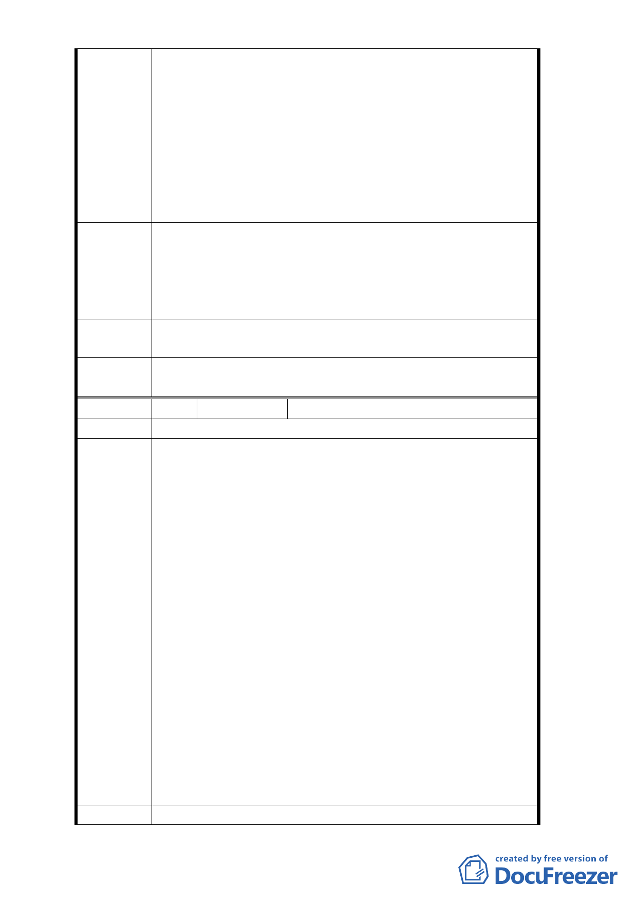

計畫案』開發方式細部計畫案」，主要係修正解除整體開
發限制，會議決議由都委會成立專案小組研議。
該街廓當年因未能順利整合，本公司土地先行開發為
一期。二期土地至今仍未開發，目前用途一樓部分為店面
、二樓（含）以上多做為住宅使用，已規劃都更改建，惟
其土地使用仍受六種使用限制，故其都更後之大部分住宅
仍須解除六種使用限制，與京華城申請多年之細部計畫變
更案標的相同。為節省時間及不浪費社會資源，應依共同
需求將兩案併入同一程序討論。
請求協助事項：京華城自 98 年起洽商細部計畫變更
及正式提出申請案至今已逾五年之久，迄今未能獲台北市
建議辦法 政府核准。因本次都委會審議解除整體開發限制，希望能
一併審議解除限制六種使用用途之細部計畫案。特請應議
員惠予協助督促本案。
擬建議處
理意見
同編號3回覆內容。
委
決
員
會
議
同編號1。
編 號 3-b
陳情位置
陳情人 京○城股份有限公司（102.10.31）
主旨：為貴會將研議解除整體開發限制，請求一併審議解
除限制六種使用用途細部計畫案，如說明。
說明：
一、貴會於 102 年 10 月 24 日召開委員會議，審議修訂
「修訂『台北市土地使用分區（保護區、農業區除
外）計畫（通盤檢討）案內有關八德路四段、東寧
路、縱貫鐵路、八德路四段 106 巷所圍地區（原唐
榮鐵工廠）土地使用計畫案』開發方式細部計畫案
陳情理由
」，主要係修正解除整體開發限制，會議決議由貴會
成立專案小組研議。
二、該街廓當年因未能順利整合，本公司土地先行開發
為一期。二期土地至今仍未開發，目前用途一樓部
分為店面、二樓（含）以上多做為住宅使用，已規
劃都更改建，惟其土地使用仍受六種使用限制，故
其都更後之大部分住宅仍須解除六種使用限制，與
本公司申請多年之細部計畫變更案標的相同。為節
省時間及不浪費社會資源，應依共同需求將兩案併
入同一程序討論。
三、敬請惠予協助辦理。
建議辦法 為貴會將研議解除整體開發限制，請求一併審議解除限制
- 39 -